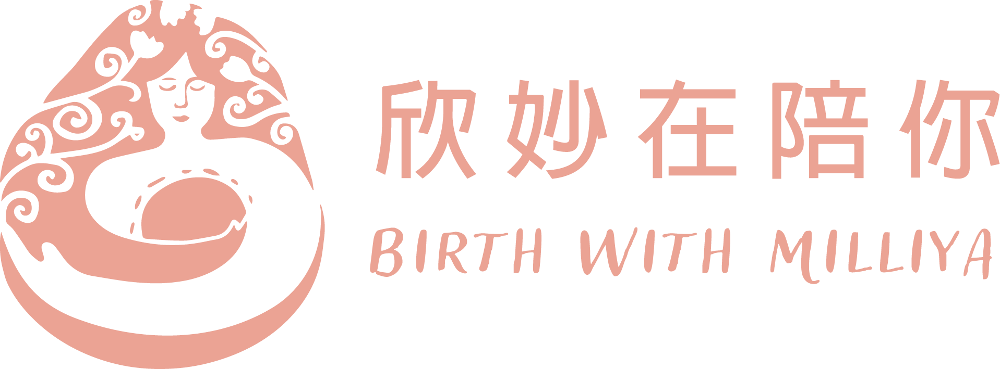

電腦在家開著跑，妳人在外面 ——
用手機接上同一個對話，繼續請它做事 📱
這是把桌機正在做的工作，接到手機上繼續。妳在電腦開好，出門後用手機接上同一個對話 —— 真正動手的，永遠是妳家那台電腦。
桌機＝工作室，Claude＝助理，手機＝對講機。妳在外面出一張嘴，動手的是家裡那台電腦。
/remote-control（示意圖）
在桌面版 Claude Code 的對話框，直接打 /remote-control 按 Enter。
第一次它會問 Enable Remote Control? → 打 y 按 Enter。
開好之後，這個對話就對妳的手機開放了 🔑 —— 手機那邊直接點就好（它也會顯示一個 QR／網址備用）。
（示意圖）
打開手機 Claude App（登入同一個帳號）→ 進 Code 分頁。
清單裡會直接出現妳桌機那個對話，旁邊有綠點 🟢（代表在線）→ 點它就接上了，不用掃 QR。
🔎 沒看到？確認手機和桌機是同一個帳號、桌機的 /remote-control 還開著。真的要用 QR 也可以：手機相機掃電腦上那個 QR 就好。
（示意圖）
接上後，妳在手機打字＝在電腦上工作。看到 綠點 🟢＋妳電腦的名字，就代表真的接通了。
它動手前一樣會問妳、要同意才做 —— 跟坐在電腦前一樣安全。
手機還能拍照片、傳檔案給它；桌機睡著或斷網，醒來會自動重連。
跑比較久的任務，它做完會推播通知妳，成品也看得到。妳不用一直盯著 🌿
桌機開著 Claude Code，打 /remote-control，用手機接上一次，交代它做一件小事 —— 整理個東西、寫句貼文都行。
接上了、或卡住了，都拍給我看 🌷 我們一起解。